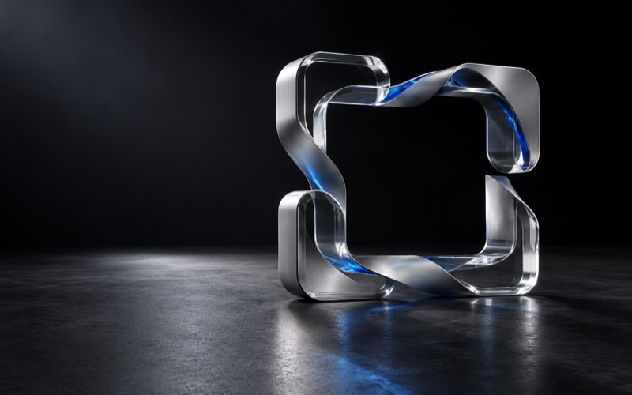

NIKO-SHOT · UI DIRECTION B
暖纸工坊 Atelier
把官网的暖纸品牌语言带进 App：暖白调色盘、柔和圆角、宽裕留白。琥珀色从「信号」变成「材质」——像工作台上一支用顺手的笔，安静、亲近、每天都愿意打开。
材质纸面、柔影、暖灰 —— 与官网同一套品牌语言
留白每个控件多 2px 呼吸，密度让位给从容
暗示快捷键收进悬停卡片，界面只留必要动作
亲和圆角、对勾、浅凹色块，降低工具的距离感
01 / CAPTURE
截图与标注
工具栏是一块暖白「调色盘」：选中工具落入浅凹琥珀色块；样式选项在同一调色盘内向下展开；悬停提示是一张带快捷键的小纸卡。
1,280 × 720
912, 468 · #C4692F
矩形选框 1
颜色
线宽
填充
02 / TEXT & TRANSLATE
识别文字与翻译
原文与译文上下同卡，用「标签胶囊 + 分隔线」区分，像纸上的两个段落；行级悬停给出浅暖底，复制哪一段一目了然。
识别文字
104 字
原文 · 可编辑
Project notes
A small note for the way you work.
Less effort. More clarity.
把想法留在眼前，让工作更从容。
每日を、少しシンプルに。
识别与翻译
104 字 · 百度
原文
Less effort. More clarity.
译文 · 自动 → 简体中文
更少的费力，更多的清晰。
把想法留在眼前，让工作更从容。
03 / AFTER CAPTURE
完成之后
右下角toast是一张圆角纸卡：对勾落在琥珀浅凹圆里，动作以文字按钮平铺；菜单栏面板行高放宽，给最近截图留出缩略图排。
缩略图 TOAST · 悬停展开动作

菜单栏面板 · 宽裕行高
04 / HISTORY
截图历史
卡片微微上浮、动作以胶囊按钮呈现；代码类截图显示暖底等宽摘要，OCR 命中词用琥珀高亮 —— 搜索能力被看见。
今天 14:32 · 1280×720 · 命中 “clarity”
// capture.swift
func grab(rect: Rect) {
let shot = engine
.freeze(rect)
.archive("png")
}
今天 11:08 · 860×540
昨天 18:40 · 2560×1440
昨天 09:15 · 1440×900
; long-scroll session
stitched: 12 frames
size: 1440 × 6230
head/tail dedup: on
周一 16:22 · 长截图 ×12
周一 10:03 · 1280×800
6 项保存在本机 · 支持 OCR 全文搜索
⇧⌘H 开关拖出即导出
05 / SETTINGS
设置
侧栏图标落在浅凹「瓷砖」里，选中项是一整块琥珀浅底；内容收进圆角面板，凭证字段聚焦时泛起琥珀光晕。
niko-shot
应用
捕获与处理
数据与信息
OCR 与翻译
文字识别与翻译服务 · 凭据仅保存在系统钥匙串
当前服务
识别后自动翻译关闭时使用「翻译」按钮
APP ID
输入 APP ID
密钥
••••••••••••••••
钥匙串保存 · •••• 表示已有值 · 留空保留，移除才删除
06 / SPEC
交互规格
与方向 A 行为一致、气质不同：动效更慢更软，触控目标更大，提示更克制。
键盘
- 工具 1–9 直选提示卡内展示
- 完成并复制↵ / ⌘C
- 撤销 · 重做⌘Z · ⇧⌘Z
- 取消截图esc
- 提示卡出现悬停 400ms
动效
- 悬停淡入150ms · 缓出偏软
- 按压缩放scale .93 · 120ms
- 样式行展开220ms · 弹簧感
- 历史卡片上浮 2px + 阴影
- reduce-motion全部退化为即时
可达性
- 聚焦态3px 琥珀浅晕
- 正文对比度≥ AA 4.5:1
- 色板确认对勾 + 双环
- 触控目标≥ 30 × 30pt
- 深色模式暖黑 #1E1A14 衍生